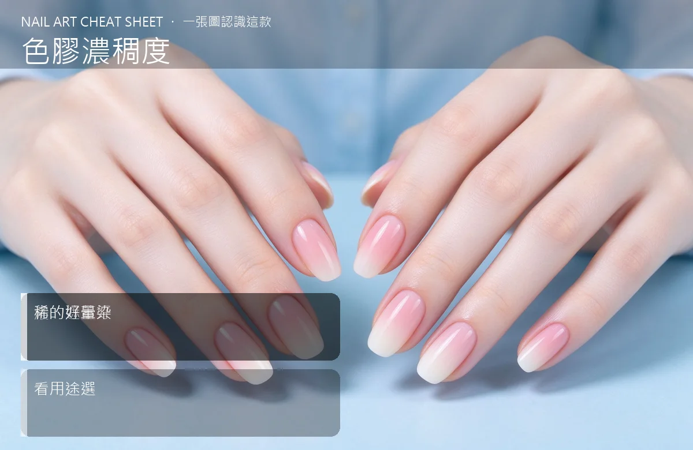

美甲色膠濃稠度是什麼？中階入門攻略
色膠有分稠的跟稀的，稠的遮蓋好、稀的好暈染，依用途選，不是越貴越好。
色膠濃稠度原理與辨識重點：美甲師不說的濃的遮蓋好
色膠的「濃稠度」決定它的手感。稠的像優格，刷子提起來會成小山峰；稀的像蜂蜜，容易流。濃的遮蓋力強、一層就出色，但流動差、不好做漸層；稀的好推、好暈染，但要刷兩三層才飽和。
誰適合做色膠濃稠度？手感差異對號入座
新手建議先從中等濃稠度的入門，比較好控制；專業美甲師會依造型需求囤不同濃度。
色膠濃稠度美甲施作步驟：濃稠／稀薄
買之前先看商品圖：罐內膠體是成尖峰還是平貼 → 尖峰＝稠、平貼＝稀 → 單色滿版用稠的 → 暈染漸層用稀的 → 同一色建議先買小罐試手感。
色膠濃稠度優缺點分析：美甲持久度與傷甲評估
| 優點 | 說明 |
|---|---|
| 濃稠色膠省層數、遮蓋力強；稀釋色膠好暈染、刷痕少。 | 是通用流派的招牌，中階就能上手 |
| 缺點 | 說明 |
| 太稠的容易堆出厚角、刷痕重；太稀的容易流到指緣、要多刷好幾層。 | 前置與別把太稠的膠自己加「稀釋液」亂調，很多稀釋液會破壞固化反應，照不乾還會縮膠。要稀就買專用品牌稀釋液。沒顧好會打折 |

色膠濃稠度新手雷區：稀的好暈染與常見錯誤
注意：別把太稠的膠自己加「稀釋液」亂調，很多稀釋液會破壞固化反應，照不乾還會縮膠。要稀就買專用品牌稀釋液。
色膠濃稠度和其他美甲做法的差別比較
色膠濃稠度跟膠的「硬度」是兩件事。稠≠硬，稀≠軟。硬度是固化後的狀態，濃稠度是塗抹時的流動性，挑選時要分開看。
色膠濃稠度美甲常見問題 FAQ
Q：為什麼我的色膠越放越稠？ A：常開蓋、接觸空氣會讓膠慢慢變稠。可以隔水加熱（熱水燙罐底）回軟一點，但變色或結塊就別用了。
Q：稠的和稀的可以混在一起用嗎？ A：同品牌同系列通常可以，但不同品牌配方不同，混了容易出怪味或固化不良。想實驗請先小量試。